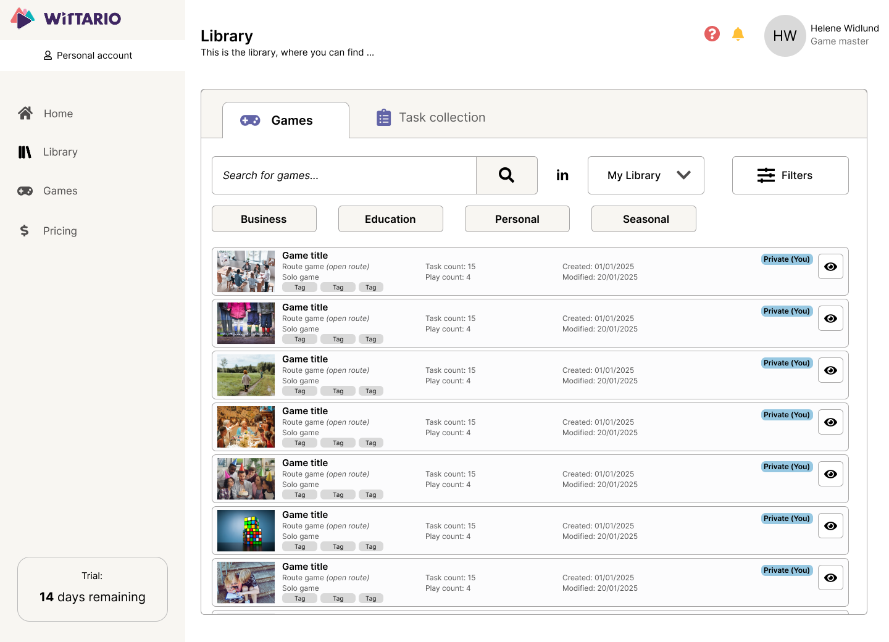
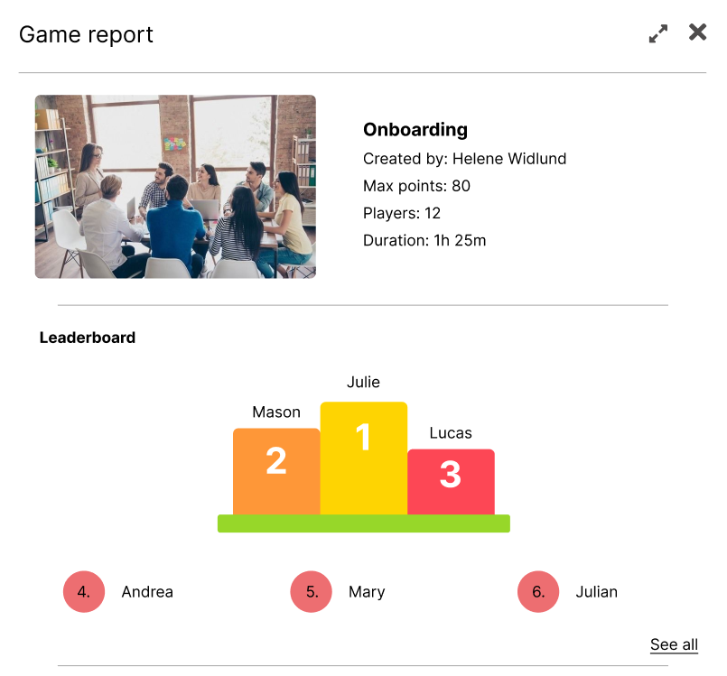
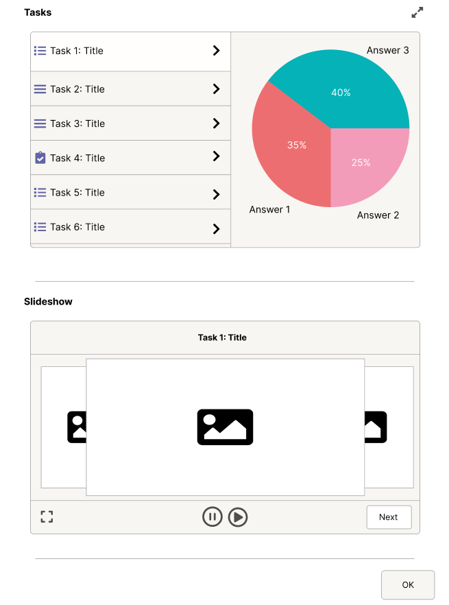
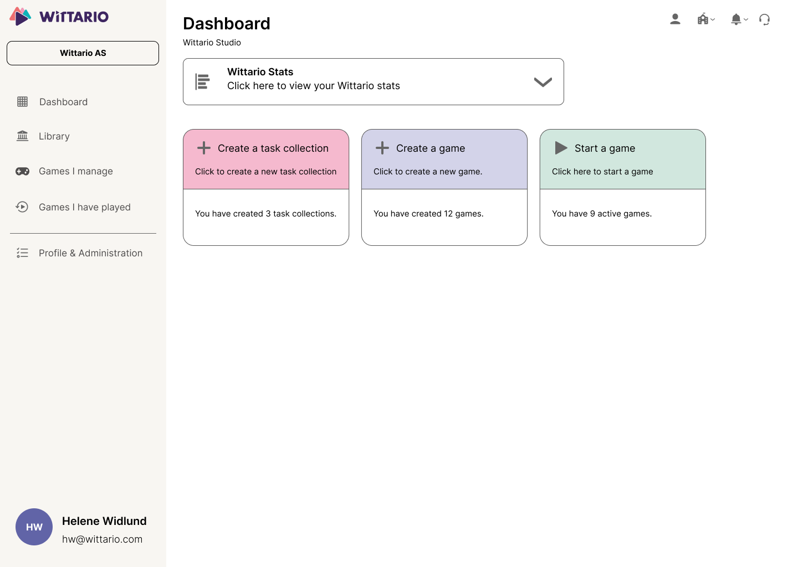

Role
UX Design Intern
Case study
Redesigning a game creation platform to make getting started feel simpler, clearer, and more intuitive.

Role
UX Design Intern
Context
Internship project for Wittario
Focus
Onboarding, task creation, library, and report flow
Starting point
Wittario already offered a lot of value, but the first steps into the platform
were not as intuitive as they could be. Users had to work too hard to understand
where to begin, how to create tasks, and how to move confidently through the
game creation process.
Through interviews, usability feedback and platform analysis, it became clear that users struggled most with understanding where to begin and how to move through the creation flow.

The insight
The platform did not mainly struggle because it was missing tools. The bigger challenge was helping users understand what to do next. That became the core of the redesign: reducing friction by making the experience feel more guided.
What I focused on
Make the homepage feel more welcoming and easier to act from immediately.
Simplify task creation so users can focus on building and creating their games, not getting stuck figuring out how everything works.
Improve navigation and the value users get at the end of the game creation.
A clearer way in
I wanted the first screen to feel more supportive. A larger start button, clearer hierarchy, and helpful getting-started content made the platform feel less overwhelming and easier to approach.
Making creation easier
Task creation was one of the most important workflows in the platform, so I
focused on simplifying the layout and reducing the feeling of complexity.
Users often hesitated during task creation, which indicated that the structure felt unclear. It also felt like a major information overload.
The new structure aimed to help users move through the process with less effort.

Improving navigation and reuse
The library needed stronger organization so users could find relevant content faster. Clearer filters, categories, and structure helped make the library easier to navigate, and to find content that's relevant for the user.

Making outcomes more useful
The report page should not feel like an afterthought. I redesigned it to present results in a clearer way, with elements like leaderboards and better structure to make the outcome more useful for game masters and players alike.


What changed
Before

After
Reflection
What mattered most in this redesign was not removing complexity entirely, but shaping the experience in a way that felt clearer and more supportive. It reinforced how much structure, hierarchy, and guidance influence whether a product feels intuitive. I wanted the user to not have to think about how to proceed, but to just do it.